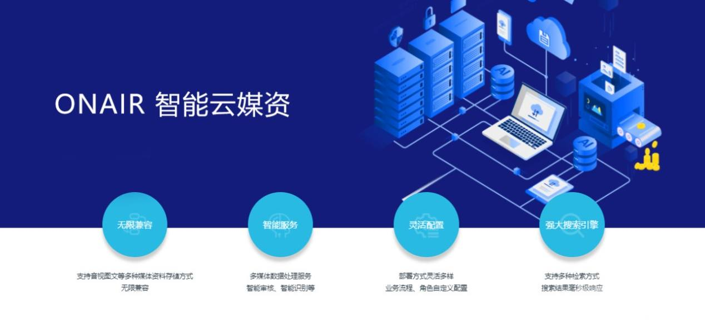

智能云媒资，简约内容生产平台，移动采编，新时代文明实践等产品全面发布，ONAIR产品矩阵智能升级
早在2016年7月，国家新闻出版广电总局发布《关于进一步加快广播电视媒体与新兴媒体融合发展的意见》（以下简称《意见》），明确要求建设广电系统的“中央厨房”，以融合型业务为核心，“抢占网络信息技术制高点，开展云计算、大数据、智能技术等关键技术研发和应用……建立用户大数据平台，深入分析用户的群体分布特征和多样的个性化需求，以用户数据、用户画像作为节目创新和服务创新的重要参考，做到精准生产、精准传播、精准服务、精准营销。”这些要求为融媒体时代媒体资产管理系统的建设指明了方向，给出了较为明确的定位。
如今随着移动互联网、人工智能等技术的进步，在现阶段的融媒建设中，媒资管理已经成为平台建设不可或缺的重要组成部分，阳光云视ONAIR 智能云媒资系统充分发挥创新思维，结合当下最先进的智能能力，不仅可以帮助内容生产、分发，也为媒资管理、数据分析统计提供有利支撑。
相信行业内的朋友一定听过这样一组高频词:“一次采集、多种生成、多元传播、全方位覆盖”。技术升级提供了更加便利的服务，但对于融媒体机构来说，“多种生成、多元传播”一定不是简单的转换格式、一键发布，在现阶段的融媒体传播要求中，要更加注重“运营”目标。
一次采集≠一条内容，现阶段各媒体平台特点各不相同，纸媒、电视、广播、微博、微信、APP、短视频，各种平台对于内容的要求不尽相同，一次采访采集回来的内容，需要考虑到满足后续不同分发渠道的素材。
多种生成≠格式工厂，不能只通过媒资系统进行简单的格式转换，而是需要通过智能能力，匹配各个分发平台特点，例如：短视频是竖屏观感最佳、电视大屏需要高清体验等等。 多元传播≠一键群发，传统媒体的表达和互联网媒体的表达方式不同，一篇在公众号或头条上可以获得十万加的爆文，在传统媒体看来，可能故事讲得太长，过于情绪化，达不到过审基本要求。而在互联网用户眼中，许多传统媒体生产的内容，严肃有余，趣味不足。这就要根据不同传播渠道制作不同内容，提高传播力。
所以，在融媒体内容生产过程中，要做的不是“多种生成”，而是“多种生产”。要切实做到多种生产，一方面融媒机构需要不断调整适应各种传播渠道的变化，另外在技术中也需要不断创新，更加符合实际传播需求，当然，做技术我们是认真的： 近日，ONAIR 智能云媒资系统重磅升级，充分突出“运营”理念，助力多种生产，多渠道发布。

智能标引：将各种媒体素材、内容成品进行智能标引，涵盖音视图文多种格式，智能识别内容素材，通过节目层、片段层、场景层、镜头层的四级编目，多维度添加智能标签，提高检索效率。
智能检测：将媒资库中的视频、图片内容智能识别敏感信息，人物、广告、场景等信息自动检测并标识，提高审核效率。
智能推荐：媒资库中的内容可根据需求智能推荐相关内容、素材，便于快速制作专题，添加相关内容等操作，同时可自动提取关键帧，形成截图，方便图文与视频内容之间的互动转化。
数据分析：将媒资数据、调用数据、用户数据等多维度数据整合，提供可视化的数据模型，在省、市、县、政府机构、企业、自媒体等账户间进行数据同步、共享，使媒资真正“运营”起来。
以“运营”为核心，是ONAIR媒体云平台产品矩阵的设计理念，是初衷，也是方向，接下来，ONAIR阳光云视将把更多智能技术引入融媒建设，助力媒体融合转型。